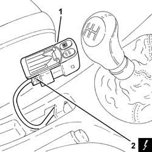

7040A56 SWITCH PANEL/SUPPORT(PUSH BUTTONS)-R R
- Path
- Procedures > 70 FITTINGS > 7040 BODYSHELL INTERIOR TRIMS AND FITTINGS > 7040A PASSENGER COMPARTMENT TRIM > 7040A56 SWITCH PANEL/SUPPORT(PUSH BUTTONS)-R R
- Kind
- repair procedure (removal / refitting; the operation number is the code)
- Applies to
- all engines; all production periods
- Interactive page
- https://sloeber94.github.io/elrnDB-aGt/en/#/125001859
Applies to: all engines; all production periods
 Removing
Removing
 Refitting
RefittingEnsure that the ignition key is in the OFF position, then disconnect the negative battery terminal (-).
Name | Connector | |
|---|---|---|
- | Battery | See A1B BATTERY ( BATTERY NEGATIVE ) |
1. Release the trim and fuel flap opening switch the the A.S.R. off switch from the housing in the centre console.
2. Disconnect the electrical connection.
Name | Connector | |
|---|---|---|
2 | Switches on tunnel | See H35 SWITCHES ON TUNNEL ( CONNECTORS ) |
Remove the trim complete with fuel flap opening switch and A.S.R. off switch.

Applies to: all engines; all production periods
Refitting
RemovingConnect the electrical connection.
Name | Connector | |
|---|---|---|
- | Switches on tunnel | See H35 SWITCHES ON TUNNEL ( CONNECTORS ) |
Place the trim complete with fuel flap opening switch and A.S.R. off switch back in its housing in the centre console.
Connect the negative (-) battery terminal